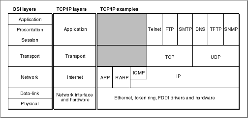

Legacy Document
Important: The information in this document is obsolete and should not be used for new development.
Important: The information in this document is obsolete and should not be used for new development.


About the TCP/IP Protocol Family
The TCP/IP protocol family is a set of networking protocols in wide use throughout the world for government and business applications. The TCP/IP protocol family includes a basic datagram-delivery protocol, called Internet Protocol (IP); a connectionless datagram protocol called User Datagram Protocol (UDP) that performs checksums; and a connection-oriented data stream protocol that provides highly reliable data delivery, called Transmission Control Protocol (TCP). In addition to these three fundamental protocols, TCP/IP includes a wide variety of protocols for specific uses, mostly at the application-protocol level.Figure 11-1 shows the TCP/IP functional layers and examples of TCP/IP protocols that run in each layer. For purposes of comparison, Figure 11-1 also shows the OSI model functional layers. Note that reliability of data delivery can depend on the reliability built into TCP, or can be added at the application level by protocols using UDP. Similarly, a protocol based on UDP can implement connection-oriented services at the application-protocol level.
Figure 11-1 TCP/IP protocols and functional layers

As discussed in the chapter "Endpoints" in this book, the way you use Open Transport functions to send data depends both on whether the protocol you wish to use is connection-oriented and whether it is transaction-based. Table 11-1 shows how the TCP/IP protocols provided with Open Transport fit into this matrix. Notice that Open Transport TCP/IP offers no transaction-based protocols.
Open Transport provides an application interface to the IP protocol known as RawIP, as shown in Table 11-1. For more information on this interface to the IP protocol, see "Using RawIP"
Table 11-1 The Open Transport protocol matrix and TCP/IP protocols
.
Connectionless Connection-oriented Transactionless RawIP
UDPTCP Transaction-based none none Open Transport offers interfaces to the TCP, UDP, and IP protocols, and to the domain name resolver (DNR). Only those protocols are discussed in the rest of this chapter. Open Transport also provides implementations of the RARP, BOOTP, and DHCP protocols, but those protocols are used by Open Transport for automatic configuration of a host, and they have no application interfaces.
For general information about the other protocols shown in Figure 11-1, see any good book on TCP/IP. Two such books for information on TCP/IP protocol internals are TCP/IP Illustrated, Volume 1 by W. Richard Stevens and Internetworking with TCP/IP, Volume 1 by Douglas E. Comer.
The Open Transport TCP/IP software modules are based on the UNIX STREAMS architecture. For more information about STREAMS, see UNIX System V Release 4: Programmer's Guide: STREAMS.
The Open Transport API is based on the XTI standard as documented in
X/Open CAE Specification (1992): X/Open Transport Interface (XTI). Among other topics, the XTI specification provides detailed descriptions of the sizes and valid settings of the TCP, IP, and UDP options available under Open Transport.The TCP/IP protocols are defined in a series of documents called Requests for Comments (RFCs). RFCs are available over the Internet at http://nic.ddn.mi, or from the Defense Data Network (DDN) Network Information Center (NIC) at
DDN Network Information Center
14200 Park Meadow Drive, Suite 200
Chantilly, VA 22021Telephone: 800-365-3642
You can get information on how to obtain RFCs via e-mail by sending an e-mail message to "rfc-info@isi.edu". The message body must read "help: ways_to_get_rfcs".
In addition, you can use a file transfer protocol (FTP) client to download copies of the RFC list and the RFCs themselves from the Internet address "nic.ddn.mil."